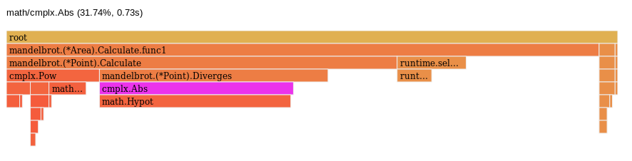
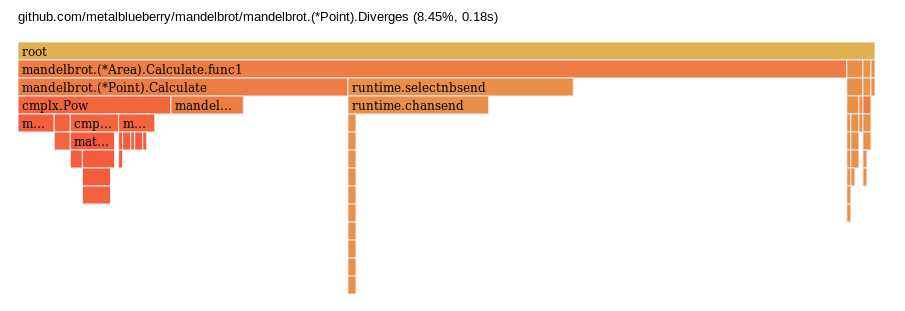
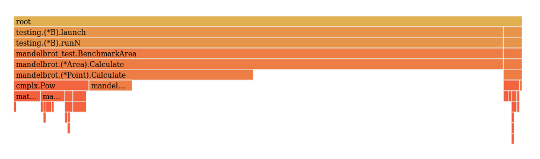
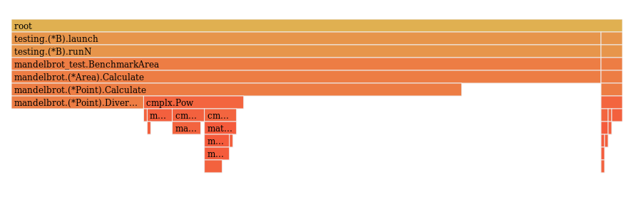
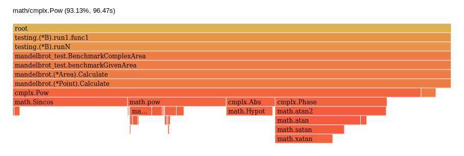

Go CPU profiling
Contents
Let’s take a look to Go CPU profiling tools to optimize the mandelbrot set calculation from previous post.
warning
You should read the previous post to understand the context of this post.
After comparing the performance of the Mandelbrot Set Calculation with the interactive viewer online, I’ve realized that the performance is really poor. For that reason, I’m creating this post to show how to use CPU profiling tools to detect the bottleneck of the code and fix it.
Write some benchmarks
The good feeling
At first sight I see that the method Diverges can be easily optimized by avoiding the square root. So let’s write some benchmarks to test that I’m right.
The value external variable is to avoid optimizations during compile time that may reduce the benchmark time. Dave Cheney explain all the details in his blog.
|
|
I’ve left the Diverges function here just as a reminder. let’s run the benchmarks to see the output.
|
|
So we have 6.43 ns/op which is quite good. Let’s modify the Diverges function and run it again.
|
|
|
|
There is a drop from 6.43 ns/op to 5.10 ns/op and this is a 20% faster! we are on the good track.
The bad news are that this is not the best way of optimizing the code. First we need to analyze it to see if saving 1 ns/op in this function is relevant or not to the whole computational work.
Full benchmark
Let’s write a benchmark function that simulates the whole process. The idea is to be as similar as possible to the main.
|
|
First let’s compare the output with old Diverge function vs the output with the new one.
|
|
The code is 40% faster for this given section of the mandelbrot set, and we’ve just removed a square root calculation.
CPU profiling
I’m going to run the full benchmark again but this time with the flag -cpuprofile and this will generate a profiling file.
|
|
To visualize the profile.out file, we need the go tool pprof. It is a really powerful tool, but for now, let’s keep it simple and just run the web interface with the following command.
|
|
The web page will open in the graph view. But personally I prefer to visualize this as a flame graph. You can do this by clicking in view>flame graph.

And here is the problem. cmplx.Abs function is taking 31.74% of the time. Let’s run the benchmark again but with the optimization.

Wonderful. The Diverges function now only takes 8.45% of the time. what is the next top offender to the computation time? To answer this question we can keep looking at the flame graph or go directly to the top view where we can see the time spent in each function.
| flat | flat% | sum% | cum | cum% | |
|---|---|---|---|---|---|
| 680ms | 31.92% | 31.92% | 2060ms | 96.71% | github.com/metalblueberry/mandelbrot/mandelbrot.(*Area).Calculate.func1 |
| 330ms | 15.49% | 47.42% | 350ms | 16.43% | runtime.chansend |
| 260ms | 12.21% | 59.62% | 820ms | 38.50% | github.com/metalblueberry/mandelbrot/mandelbrot.(*Point).Calculate |
| 210ms | 9.86% | 69.48% | 560ms | 26.29% | runtime.selectnbsend |
| 180ms | 8.45% | 77.93% | 180ms | 8.45% | github.com/metalblueberry/mandelbrot/mandelbrot.(*Point).Diverges |
| 90ms | 4.23% | 82.16% | 90ms | 4.23% | math.Sincos |
| 70ms | 3.29% | 85.45% | 70ms | 3.29% | math.xatan |
| 40ms | 1.88% | 87.32% | 40ms | 1.88% | math.Hypot |
| 40ms | 1.88% | 89.20% | 40ms | 1.88% | math.IsInf |
| 40ms | 1.88% | 91.08% | 380ms | 17.84% | math/cmplx.Pow |
The first surprise here is that runtime.chansend and runtime.selectnbsend are taking 42% of the time and is something that just reports the progress! Let’s remove it.
Optimizations
Progress reporting
It is important to notice that will make Calculate function synchronous.
|
|
We need to remove the channel from the benchmark too
|
|
And the benchmark now is…
|
|
If you scroll up to check the previous result, we’ve improved from 351339 ns/op to 206832 ns/op. Let’s get the flame graph and the top to see how to continue.
| flat | flat% | sum% | cum | cum% | |
|---|---|---|---|---|---|
| 0.93s | 49.21% | 49.21% | 1.89s | 100% | github.com/metalblueberry/mandelbrot/mandelbrot.(*Area).Calculate |
| 0.45s | 23.81% | 73.02% | 0.96s | 50.79% | github.com/metalblueberry/mandelbrot/mandelbrot.(*Point).Calculate |
| 0.17s | 8.99% | 82.01% | 0.17s | 8.99% | github.com/metalblueberry/mandelbrot/mandelbrot.(*Point).Diverges |
| 0.11s | 5.82% | 87.83% | 0.12s | 6.35% | math.Sincos |
| 0.06s | 3.17% | 91.01% | 0.06s | 3.17% | math.Hypot |
| 0.05s | 2.65% | 93.65% | 0.10s | 5.29% | math.pow |
| 0.02s | 1.06% | 94.71% | 0.02s | 1.06% | math.Abs |
| 0.02s | 1.06% | 95.77% | 0.02s | 1.06% | math.IsInf |
| 0.02s | 1.06% | 96.83% | 0.05s | 2.65% | math.atan2 |
| 0.01s | 0.53% | 97.35% | 0.01s | 0.53% | math.frexp |

96% of the time is spent inside the Area.Calculate function and this means that we are not wasting time doing other stuff. Appart from that, I would expect to spend most of the time inside Point.Calculate, as it is where the iterations are performed. Let’s go to the source tab to see the time spent per line.
|
|
So we spend 1⁄3 of the time iterating over the Points array and assigning back the value. I feel a little bit lost at this point so let’s just modify the code to see if it can be improved. The first thing I want to try is to replace the range operation for a simple for loop.
Slice traversal
This is the new version of the Calculate function.
|
|
|
|

|
|
This change gives us 105798 ns/op which is near two times faster than the previous version! This is great. If you check the initial benchmark, it was 564276 ns/op so this means we are already x5 times faster.
Before continuing the optimization, I’ve decided to compare the performance vs the online viewer. Just to have some reference of how fast can this task be performed. The sad news are that for the following section, our implementation takes 100s and the online viewer takes 3.7s.
The BenchmarkComplexArea function is the one that takes 100s.
|
|
When running this benchmark, I’ve got an interesting profile.out that shows that 93.13% of the time is spent in math/cmplx.Pow function.

This is really sad because this function is really useful and I don’t see a clear way of optimizing it. I guess that as this function can handle any power number. An optimization can be just multiplying the number by itself. Let’s try.
math.Pow
Another easy change. These are the old and the new version of point.Calculate
|
|
Let’s run benchmarks…
|
|
I think we’ve found the top offender to the calculation and easily improved it. now the timing is 5013357483 ns/op for the ComplexArea which is 5.013357483 s/op and this is only 1.3 seconds away from the web page!
learning
Don’t use math.Pow unless you really need it.
bug
After this change, the tests are failing because the case (0,1) no longer diverges. We’ve solved this numerical issue when removing math.Pow and the tests must be updated.
Pointer dereference
Inside the method point.Calculate there are several references to variables inside Point. This forces the program to dereference the variables each loop and this is a waste of time. To fix it I’m going to create a copy of the variables at the beginning of the method. It is also required to inline the Diverges method.
|
|
And running benchmarks again…
|
|
It is interesting that the benchmark for the first area is slightly slower even though the other two are faster. I can’t give a explanation why this happen. Anyway, the time for the complex are is… 3.5 seconds!! faster than the webpage.
Conclusion
I’m really happy with the result of the optimization. We have improved the code to run 85% faster than the initial version and this is quite impressive. I think the next step is to render the set by chunks to parallelize the computational task and take advantage of the multiple cores.
You can explore the repository to see the whole code and to play with it here.
Thank you for reading and feel free to leave a comment bellow, I will be really happy to hear from you.